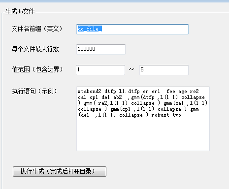
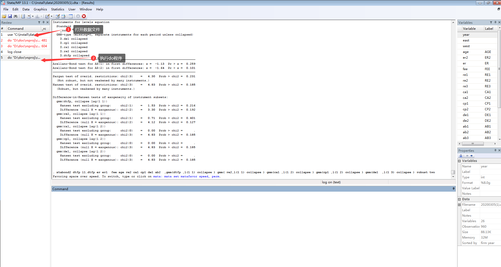
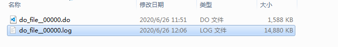
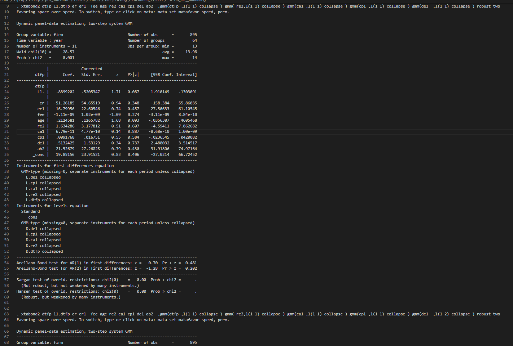
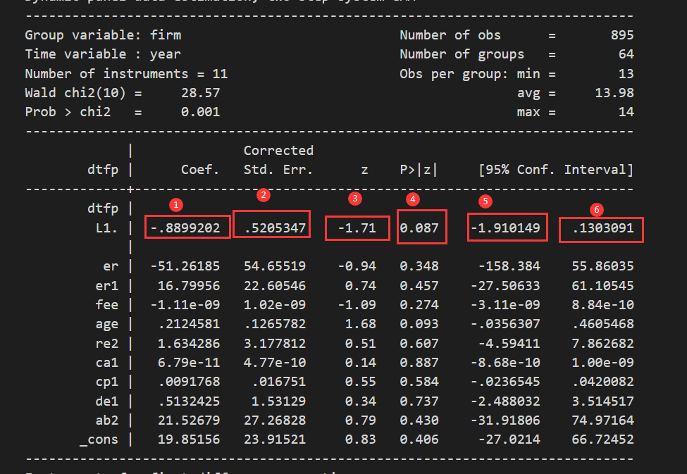
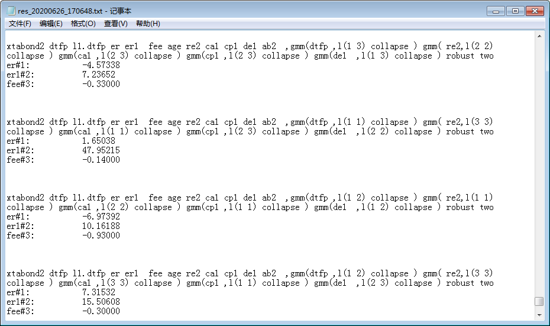

1. Stata功能1
1.1. 值范围
所有值在给定范x围全部罗列

执行语句（示例）: xtabond2 dtfp l1.dtfp er er1 fee age re2 ca1 cp1 de1 ab2 ,gmm(dtfp ,l(1 1) collapse ) gmm( re2,l(1 1) collapse ) gmm(ca1 ,l(1 1) collapse ) gmm(cp1 ,l(1 1) collapse ) gmm(de1 ,l(1 1) collapse ) robust two
值范围（包含边界）: 1 ~ 3
语句中，(1 1)代表可以罗列的项
当范围是 [1,3] 会有如下可能 l(1, 1) l(1, 2) l(1, 3) l(2, 2) l(2, 3) l(3, 3)
生成的do文件是: do文件（点击下载）
1.2. stata执行
在stata中执行对应do命令，会在同目录下生成.log文件


由于log文件太大，这里只放张截图

1.3. 解析LOG
1.3.1. 值格式
值格式：行名#列名

比如图中，这两个（注意L1.）
L1.#1: -.8899202
L1.#2: .5205347
er#3: -0.94
目前支持的指标
| 指标名 | 详细 |
|---|---|
| 行名#列名 | 对应L1.,er,er1,fee,age,re2,ca1,cp1,de1,ab2,_cons |
| AR1 | 通过AR(1) in first differences:去匹配 |
| AR2 | 通过AR(2) in first differences:去匹配 |
| Sargan | 通过Sargan test of overid. restrictions去匹配 |
| Hansen | 通过Hansen test of overid. restrictions去匹配 |
1.3.2. 指标限制
类型1: > （er#4>10代表要求er#4大于10）
类型2: < （er#1<0代表要求er#1小于10）
类型3: ? (er#1?0代表要求er#1尽可能接近0)
=== 线分割不同限制，一个用例只需要满足一个限制即可
1.3.3. 指标权重
不同指标有不同权重
cp1#4=40 代表 cp1 中 P>|z| 的权重是40
默认权重是10
1.3.4. 展示指标
最后在生成文件中，会展示的指标

2. Stata功能2
1.1. 值范围
reg y x1 x2 x3 x4 c1 c2 c3 c4 c5 i.year i.ind
命令中reg代表线性回归，y是被解释变量，x1,x2,x3,x4是解释变量，c1,c2,c3,c4,c5是控制变量。
可能之后x没有那么多只有一两个，控制变量也没有那么多或者比5个更多。
需要的就是这个命令下能够随意变动c1,c2,c3,c4,c5 的排列组合，可以是c1,c2,c3,c4,c5 本身单独的，
也可能是任意两个三个四个组合的也可能是所有都有的组合，然后前面加上y，
x1,x2,x3,x4再进行reg的命令看结果的方向和显著性。后面的i.year和i.ind是每个回归中最后都要加的用来控制行业和年份的
rename var1 year
rename x5 ind
reg y x1 x2 x3 x4 c1 c2 c3 c4 c5 i.year i.ind
reg y x1 x2 x3 x4 ?? i.year i.ind
reg y x1 x2 x3 x4 c1 c2 c3 c4 c5 i.year i.ind
reg y x1 x2 x3 x4 c1 c2 c3 c4 c5 i.var1 i.ind